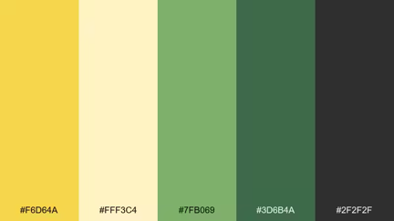

✦
Reverse caregiving
Space for adult children caring for aging or disabled parents to work through burnout, shifting roles, and the emotions that come with caregiving.
.jpeg)
I support adult children caring for aging or disabled parents, and families navigating serious mental health or addiction challenges. Together, we can make room for grief, conflict, and change—and find a path toward clarity and resilience.
Thoughtful support for caregiving, family strain, and life’s hardest seasons.
Space for adult children caring for aging or disabled parents to work through burnout, shifting roles, and the emotions that come with caregiving.
Support for family members processing grief, conflict, and the strain of a loved one’s serious mental health or addiction challenges.
Work through loss, family trauma, and difficult transitions with care tailored to your needs.

I’m Bethanney Krueger, MA, LPC-Associate, NCC. My clinical training includes work with adults in inpatient behavioral health, children and families navigating grief, and individuals across the lifespan.
“You can care deeply for your family and still need support for yourself. Therapy can help you make space for what you’re carrying and find your next step.”
